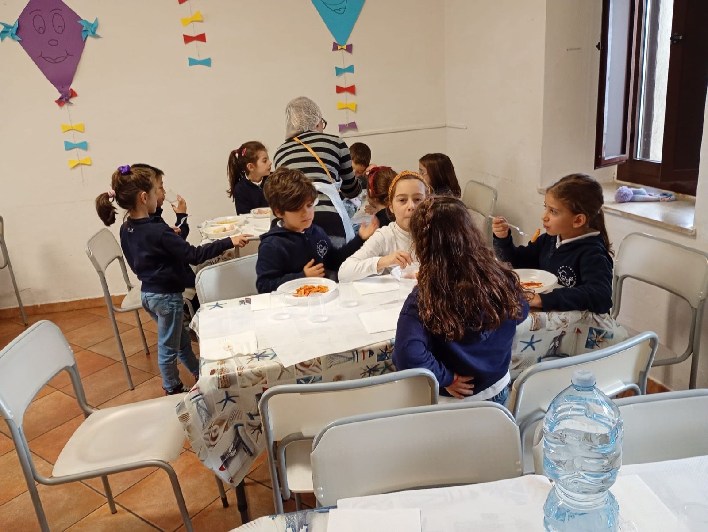

Dai 3 ai 6 anni: il gioco, la scoperta e le prime amicizie, in un ambiente sicuro e accogliente.
Uno spazio sicuro e accogliente in cui i più piccoli imparano a stare insieme, a esprimersi e a scoprire il mondo attraverso il gioco, la creatività e la relazione.

Prenota un Open Day o una visita: ti racconteremo nel dettaglio ogni percorso e risponderemo a tutte le tue domande.